Higashine
Higashine · Yamagata
Higashine
Highlighted on the Yamagata map.
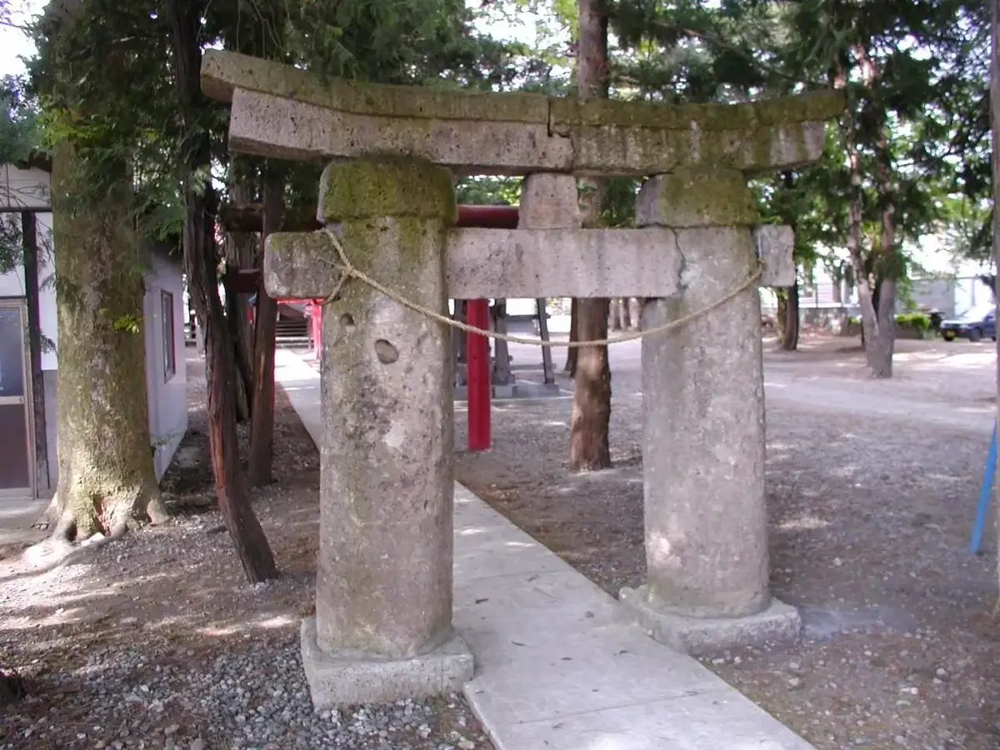
Stay
スーパーホテル山形・さくらんぼ東根駅前 天然温泉桜桃の湯
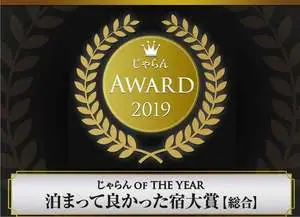
Suupaahoteru Yamagata Sakuranbo Higashine Ekimae Tennen Onsen Outou No Yu
Hotel in Higashine, Yamagata.
スマイルホテルさくらんぼ東根
Sumairuhoteru Sakuranbo Higashine
Hotel in Higashine, Yamagata.
旅館さくら湯
Ryokan Sakura Yu
Ryokan inn in Higashine, Yamagata.
心と身体を癒す琥珀色の東根温泉 民謡の宿あづまや
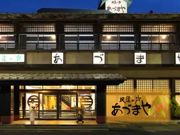
Kokoro To Shintai Wo Iyasu Kohakuiro No Higashine Onsen Minyou No Yado Azumaya
Onsen lodging in Higashine, Yamagata.
東根温泉 のゝか本郷館
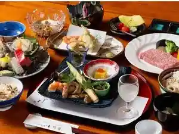
Higashine Onsen No Ka Hongou Kan
Onsen lodging in Higashine, Yamagata.
Dining
肉そば 舞鶴
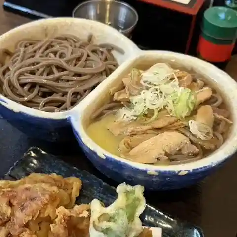
Niku Soba Maizuru
Soba restaurant in Higashine, Yamagata.
二代目高橋商店
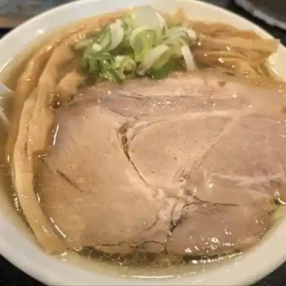
Nidaime Takahashi Shouten
Ramen shop in Higashine, Yamagata.
とんこつらーめん こう路
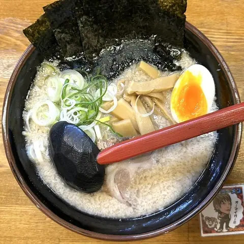
Tonkotsuraamen Kou Michi
Ramen shop in Higashine, Yamagata.
伊勢そば
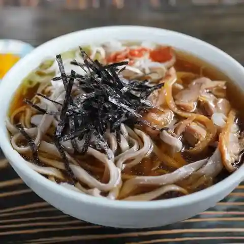
Ise Soba
Soba restaurant in Higashine, Yamagata.
そば処 東亭
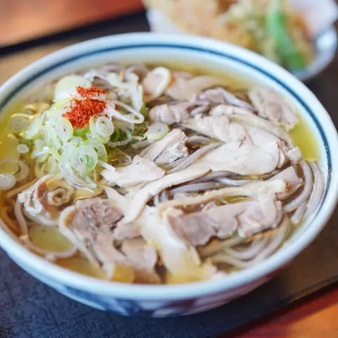
Soba Tokoro Higashi Tei
Soba restaurant in Higashine, Yamagata.
石臼十割そば 森久
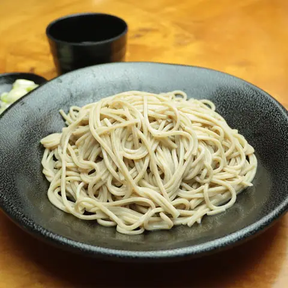
Ishiusu Juu Wari Soba Morihisa
Soba restaurant in Higashine, Yamagata.
明烏
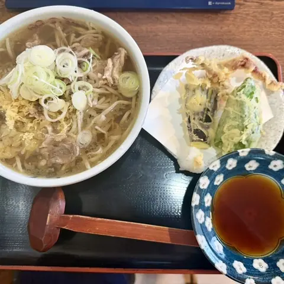
Akegarasu
Soba restaurant in Higashine, Yamagata.
七兵衛そば 東根店
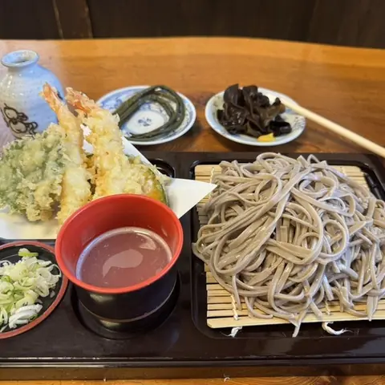
Shichibyoue Soba Higashine Mise
Soba restaurant in Higashine, Yamagata.
肉そば はくよう
Niku Soba Hakuyou
Soba restaurant in Higashine, Yamagata.
山ベーグル＆CoffeeStand
Yama Beeguru & Coffeestand
Bagel shop in Higashine, Yamagata.
拉麺ひなた
Raamen Hinata
Ramen shop in Higashine, Yamagata.
つんつるてん
Tsuntsuruten
Udon restaurant in Higashine, Yamagata.
中華そば まがりすけ
Chuuka Soba Magarisuke
Ramen shop in Higashine, Yamagata.
そば処 おおけやき
Soba Tokoro Ookeyaki
Soba restaurant in Higashine, Yamagata.
肉そば処 いち福
Niku Soba Tokoro Ichi Fuku
Soba restaurant in Higashine, Yamagata.
龍上海 東根店
Ryuu Shanhai Higashine Mise
Ramen shop in Higashine, Yamagata.
山下食堂
Yamashita Shokudou
Shokudo diner in Higashine, Yamagata.
そば処 花いずみ
Soba Tokoro Hana Izumi
Soba restaurant in Higashine, Yamagata.
居酒屋わ
Izakaya Wa
Izakaya in Higashine, Yamagata.
大滝ドライブイン 泉や
Ootaki Doraibuin Izumi Ya
Shokudo diner in Higashine, Yamagata.
つるよしそば
Tsuruyoshisoba
Soba restaurant in Higashine, Yamagata.
竈煙 心月
Kamado Kemuri Shingetsu
Japanese restaurant in Higashine, Yamagata.
Sights
Sekiyama Waterfall
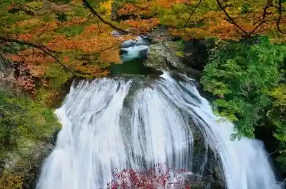
Marvel at this dynamic waterfall descending into a gorgeous emerald green plunge pool below!
Yamagata Airport
https://yamagatakanko.com/en/attractions/detail_4685.html